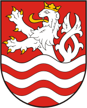

Escudo de armas de la ciudad de Karlovy Vary
Karlovy Vary recibió este nombre en honor del emperador del Sacro Imperio Romano Germánico Carlos IV, quien fundó la ciudad en 1350. Es famosa históricamente por sus fuentes termales (trece fuentes principales y unos cientos más pequeñas) y el río Teplá, también de aguas calientes.

Imagen de la ciudad de Karlovy Vary y los hoteles balneario
Llego a ser un famoso destino turístico en el siglo XIX, especialmente para personajes internacionales ilustres que buscaban tratamientos termales.